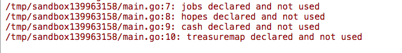
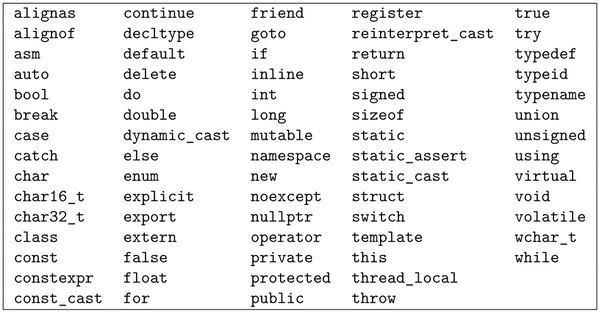
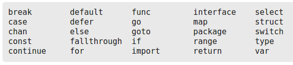

A Beginner Has a Go
A novice's perspective of Golang
Created by Ryan McDermott / @ryansworks
What I Don't Want to Talk About
- Read-Write Mutexes
- CPU scheduling
- Assembly code analysis and Golang object file dissection
- Cross compilation
- Race condition prevention of Go runtime
Because I Don't Know Any of That Stuff
What I Do Want To Talk About
- Who I Am
- Why I find Go very compelling for certain projects
- What I love about the simplicity of Go
- What I don't love about its simplicity
- Where I want to Go with it
My Background
Full stack web programmer.
Pythonista
JavaScript kiddie
Very timid C/C++ developer
More Background
Musician and music enthusiast.
Musical Project
I discovered new artists and artists' connections by clicking through related artists. Sounded like something that could be automated.
Like The Six Degrees of Kevin Bacon
If you're not a fan of bacon, here's Hamm.
A To Go Order
Golang seemed like a good solution.
- Type-safe
- Very lightly object oriented which provides nice abstractions. Interfaces, structs, and receivers
- Concurrency primitives make it easy to distribute API requests
- Great for building a CLI tool. See https://github.com/codegangsta/cli
- Statically linked binaries and cross compilation for shipping easily
It's also pretty hip and all over Hacker News, so that's pretty cool.
Spotifind
Spotifind is an app that connects artists by a chain of related artists using Spotify's API and Goroutines to "thread" requests.
Concurreny Patterns
Spotifind uses a worker/work queue concurrency pattern to distribute API requests to Spotify and speed up performance.
- Work Queue -- a buffered channel, that collects work requests.
- Dispatcher -- pulls work requests off of the work queue, and distributes each to an available worker.
- Worker Queue -- a buffered channel of channels. The channels that are received into each channel, are what the workers use to receive their work requests.
- Workers -- what actually does the work on each work request. In the case of Spotifind, this sends an API request fo find each new related artist and see if we have a match to our destination artist.
Worker Structs
// Simple structure to hold a reference to an artist.
type WorkRequest struct {
Artist *Artist
Visited *VisitedArtists
}
// A buffered channel that we can send work requests on.
var WorkQueue = make(chan WorkRequest, 100)
var WorkerQueue chan chan WorkRequest
type Worker struct {
ID int
Work chan WorkRequest
WorkerQueue chan chan WorkRequest
}
Dispatcher
func StartDispatcher(nworkers int) {
WorkerQueue = make(chan chan WorkRequest, nworkers)
for i := 0; i < nworkers; i++ {
fmt.Println("Starting worker", i+1)
worker := NewWorker(i+1, WorkerQueue)
worker.Start()
}
go func() {
for {
select {
case work := <-WorkQueue:
go func() {
worker := <-WorkerQueue
worker <- work
}()
}
}
}()
}
Worker Object
func NewWorker(id int, workerQueue chan chan WorkRequest) Worker {
worker := Worker{
ID: id,
Work: make(chan WorkRequest),
WorkerQueue: workerQueue,
}
return worker
}
Worker Goroutine
var GlobalQuitChan = make(chan Artist)
func (w Worker) Start() {
go func() {
for {
w.WorkerQueue <- w.Work
select {
case work := <-w.Work:
fmt.Printf("worker %d: %s\n", w.ID, work.Artist.Name)
FindRelatedArtists(work.Artist, work.Visited)
case <-GlobalQuitChan:
fmt.Printf("worker %d stopping\n", w.ID)
return
}
}
}()
}
Remaining Structures
type Artist struct {
Name string
Id string
Parent *Artist
}
type Artists struct {
Href string
Items []Artist
}
type VisitedArtists struct {
Artists []Artist
}
Once We Find an Artist
Build a tree of related artists, back to the origin artist from the destination.
func WalkRelatedArtists(artist *Artist, tree []string) []string {
tree = append(tree, artist.Name)
if artist.Parent != nil {
tree = WalkRelatedArtists(artist.Parent, tree)
}
return tree
}
We've found Kevin Bacon
And yes, apparently Kevin Bacon is actually in Spotify!
That's Enough!
We're tired of the bacon jokes, how did I feel about Golang?
Trying to Go Steady
Getting acquainted with Go required a bit of adjustment after having used C/C++. Declaring types to the right of variables names can be a bit mind altering at the beginning.
var jobs int
var hopes string
var cash [10]int
var treasuremap map[string]int
type StartupProcess struct {
startup bool
cashIn bool
sellOut bool
broDown bool
}
Almost as chaotic as learning to drive on the other side of the road, like Swedes had to start doing in 1967.
But the Swedes are happy now.
Dependencies Took Time to Understand
go get looks great from a semantic point of view, but just shoving everything into the GOPATH feels a little weird when you come from having the luxury of pip/virtualenv, npm, gem/rvm, etc.
Makefile saves the day
It doesn't handle versioning problem well, but it does silo off dependencies to the package level
GOPATH := ${PWD}/vendor:${GOPATH}
export GOPATH
vendor_get: vendor_clean
GOPATH=${PWD}/vendor go get -d -u -v \
github.com/rapito/go-spotify/spotify \
github.com/codegangsta/cli
vendor_update: vendor_get
rm -rf `find ./vendor/src -type d -name .git` \
&& rm -rf `find ./vendor/src -type d -name .hg` \
&& rm -rf `find ./vendor/src -type d -name .bzr` \
&& rm -rf `find ./vendor/src -type d -name .svn`
More stumbling blocks...
I expected some similar functionality between slices and maps, but that's not the case.
Delete from map
delete(m, k) // remove element m[k] from map m
Delete from slice
a = append(a[:i], a[i+1:]...)
Strange Package Stuff
“By convention, packages are given lower case, single-word names; there should be no need for underscores or mixedCaps.”
But why?
Only cats like strange packages
Erring on the side of err
if err != nil {
doSomething()
}
This kind of code is everywhere. Because of Golang's lack of exceptions it seems to crop up a lot. Defer, panic, and recover provide some ways around it but maybe Golang needs exceptions, then again I could be wrong!
Stricter than a drill sergeant
Coming from GCC, you are used to -Wall, but probably not of completely having the compiler halt on unused variables!
All of this can come across as pedantic, if you're like me and spend all your days in a dynamic language.
Sometimes it's nice to play fast and loose, but in the end Go's strictness saves you from yourself.
No style concerns
Out of this strictness, does come a lot of goodness. One of those things that I love is a formatter being built in with the language: go fmt. No more of these kinds of interactions:

No classes, no worries
Object composition
Golang is the Future
Go is the future of systems software. Where bigger beasts roamed, Golang takes over by being nimble, powerful, and fun. The prior solutions were too big and massive, and now feel almost inappropriate in comparison to Go. Just look at a keyword comparison between C++ and Go →
C++

Go

THE END
Any questions?